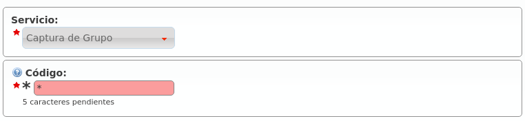

Servicios adicionales¶
Existen servicios especiales a los que se accede marcando códigos especiales desde un terminal de usuario cuando éste está en reposo.
Peligro
Los servicios que se definen en esta sección no son accesibles en medio de una conversación. Se activan llamando a los códigos que se mencionarán, no marcándolos en medio de una conversación.
Listado de códigos a nivel global¶
En el momento de realizar esta documentación, existen los siguientes servicios especiales visibles en la sección Gestión general > Servicios:

- Captura de llamadas directa
Es el servicio que permite capturar metiendo el código que se asigne seguido de la extensión del teléfono a capturar.
- Captura de grupo
Es el servicio que permite capturar el teléfono que esté sonando dentro de tu(s) grupo(s) de captura.
- Consultar el buzón de voz
Este servicio permite acceder a un menú de voz que te presenta los mensajes de voz nuevos, viejos, etc. Es una alternativa a la recepción de mensajes de voz vía correo electrónico. A partir de 1.4, este servicio acepta una extensión opcional trás el código de servicio para poder acceder a los buzones de otros usuarios. Los usuarios pueden proteger su buzón de voz empleando las opciones del menú de voz interno.
- Grabar locución
Este servicio permite grabar la locución llamando desde cualquier terminal de cualquier usuario a un código especial. Las instrucciones se mostrarán en el idioma del usuario.
- Abrir Candado
Al llamar a este código de servicio se abrirá el candado (ver Candados).
- Cerrar Candado
Al llamar a este código de servicio se cerrará el candado (ver Candados).
- Conmutar Candado
Al llamar a este código de servicio se conmutará el estado del candado (ver Candados).
A medida que la solución vaya evolucionando y surjan servicios nuevos, aparecerán en este listado para que el operador global sepa de su existencia y lo comunique a sus operadores de marca.
Atención
Este listado determina los servicios disponibles y los códigos por defecto de las nuevas marcas.
Consejo
Cambiar un código solo afecta a las marcas que se creen tras el cambio.
Definición de servicios y códigos a nivel de marca¶
La sección Configuración de Marca > Servicios permite al operador de marca:
Redefinir el código de acceso por defecto a dichos servicios para las empresas que a su vez no lo redefinan.
Borrar servicios que no quieran que puedan utilizar sus empresas.
Por defecto este listado aparece con todas los servicios y los códigos configurados a nivel Global:
Atención
Este listado determina los servicios disponibles y los códigos por defecto de las nuevas empresas.
Consejo
Cambiar un código solo afecta a las empresas que se creen tras el cambio. Borrar un servicio hace que no esté disponible para ninguna empresa de la marca.
Definición de códigos a nivel de empresa¶
Cada empresa puede pisar los valores por defecto asignados por su operador de marca accediendo a Configuración de Empresa > Servicios y cambiando el código asignado.
Empresa que quiere capturar con ** en lugar de con *95:
Consejo
Los servicios que el administrador de empresa borre no podrán ser utilizados por sus usuarios.